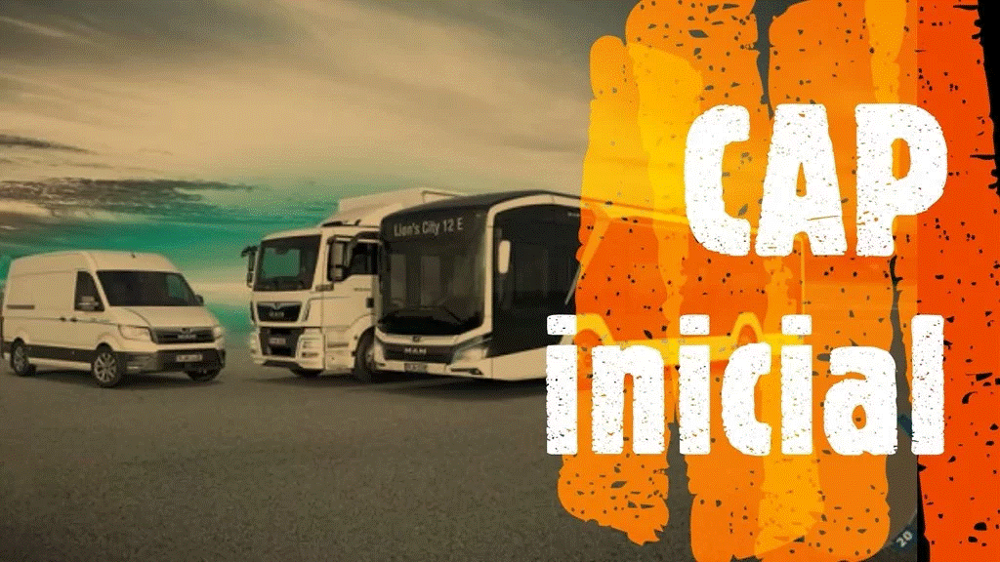
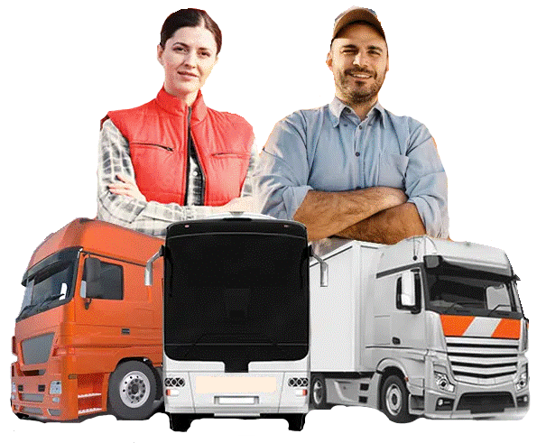
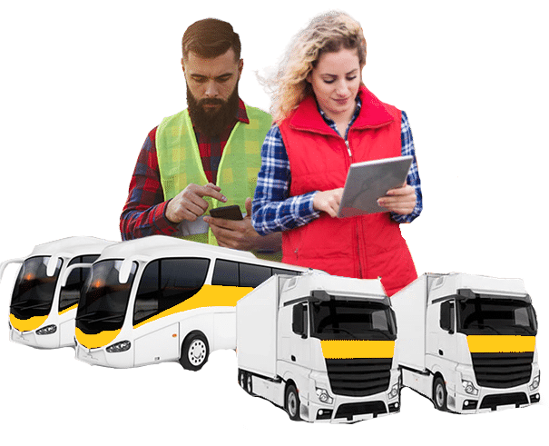

Autoescuela Am¡car
☰
Inicio
Quiénes Somos
Campus Virtual
Noticias
Contacto
Tienda
FORMACION
AM¡CAR CENTRO DE FORMACIÓN
Rúa Felgar, 13, 32350 A Rúa, Ourense
📞 988 50 82 95
HORARIO:
De lunes a viernes de 9:00-17:00 horas
NUESTROS CURSOS
ADR
-Básico + Cisternas:
PRESENCIAL 36H + extinción de incendios.
-Explosivos o radioactivos.
PRESENCIAL 18H + extinción de incendios.
ITC Minera / Silice
Formar y capacitar a los trabajadores del sector minero en base a la regulación de la formación profesional mínima en materia de seguridad y salud laboral.
PRESENCIAL 20 horas.
PRL maquinaria agricola
Identificar cuáles son los riesgos que conlleva una mala actuación en la utilización de maquinaria agrícola, aplicando los procedimientos adecuados para un uso seguro de la maquinaria.
Online 20 horas.
Carretilla elevadora
Adquirir las competencias y habilidades necesarias para la correcta conducción y manejo de carretillas elevadoras con control de las cargas total y seguridad del area.
ONLINE/PRESENCIAL 10H + PRÁCTICAS.
Operador retroexcavadora y pala cargadora
Adquirir las competencias y habilidades necesarias para la correcta conducción y manejo de pala cargadora y retroexcavadora, potenciar la seguridad en el uso de maquinaria y cargas según las normas de prevención de riesgos.
ONLINE/PRESENCIAL 10H + PRÁCTICAS.
Operador grúa pluma
Adquirir las competencias y habilidades necesarias para el manejo de la grúa pluma respetando la normativa y utilizando los EPI ́S necesarios para evitar riesgos.
ONLINE/PRESENCIAL 12H + PRÁCTICAS.
Operador plataformas móviles
Adquirir las competencias y habilidades necesarias para manejar plataformas elevadoras móviles de personal (PEMP) en condiciones de seguridad.
ONLINE/PRESENCIAL 12H + PRÁCTICAS.
Operador carretilla telescópica (manitou)
Adquirir las competencias y habilidades necesarias para realizar gestiones de operador y manipulador telescópica y su correcto funcionamiento con el fin de evitar situaciones de riesgo.
ONLINE/PRESENCIAL 10H + PRÁCTICAS.
PRL movimiento de tierra (mini pala y oruga)
Adquirir conocimientos preventivos básicos sobre los riesgos inherentes a los vehículos y maquinaria para el movimiento de tierras más utilizados en la construcción, su utilización y las técnicas preventivas específicas de aplicación.
ONLINE/PRESENCIAL 20H + PRÁCTICAS.
Conducción eficiente
Conocer y aplicar las diferentes técnicas de conducción eficiente al manejar cualquier vehículo industrial
ONLINE/PRESENCIAL 30H + PRÁCTICAS.
Conducción eficiente
Conocer las diferentes técnicas de conducción Y mejorar aspectos relacionados con el consumo de carburante para reducir al máximo el consumo de combustible con diferentes habilidades.
ONLINE/PRESENCIAL 12H + PRÁCTICAS.
Capacitación transportistas
Obtención del título acreditativo que reconoce a sus titulares la capacidad para poder ejercer tanto la profesión de transportista de mercancías de servicio público (o por cuenta ajena), como la de Operador de Transporte.
ONLINE/MIXTO 100H.

CAP inicial Mercancias/Viajeros
Obtención de una acreditación profesional europea que avala que has superado los exámenes para ser un conductor profesional capaz de ejercer la profesión en todos los países que forman parte de la Unión Europea.
PRESENCIAL 130H TEORÍA + 10H PRÁCTICAS.

CAP ampliación Mercancias/Viajeros
Ampliar el perfil profesional como transportista. El curso CAP Ampliación tiene una duración más corta que el inicial porque concentra únicamente el contenido específico que se desea acreditar.
PRESENCIAL TEORÍA 23,5H + 2,5H PRÁCTICAS.

CAP renovación Mercancias/Viajeros
Deben hacerlo todos los conductores profesionales cada cinco años. Estos cursos para renovar el CAP para el transporte de mercancias deben realizarse durante toda su vida profesional
PRESENCIAL 35HORAS.
PRL Genérico
Identificar conceptos básicos sobre seguridad y salud y puedan conocer el marco normativo general que rige la actividad en este aspecto.
PRESENCIAL/ONLINE 60H.
Equipos protección industrial
Identificar los diferentes equipos de protección individual a utilizar en cada tipo de trabajo y aplicar conocimientos adquiridos en este curso para promover el uso adecuado de los equipos de protección individual.
ONLINE 10H.
Manipulador de alimentos
Proporcionar los conocimientos básicos en cuanto a la manipulación de alimentos (fabricación, procesado, envasado, almacenamiento, transporte, distribución y comercialización de los alimentos).
ONLINE 10H.